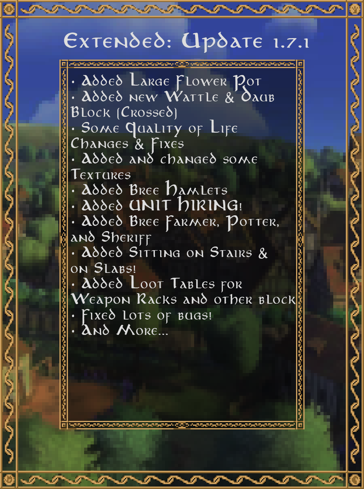
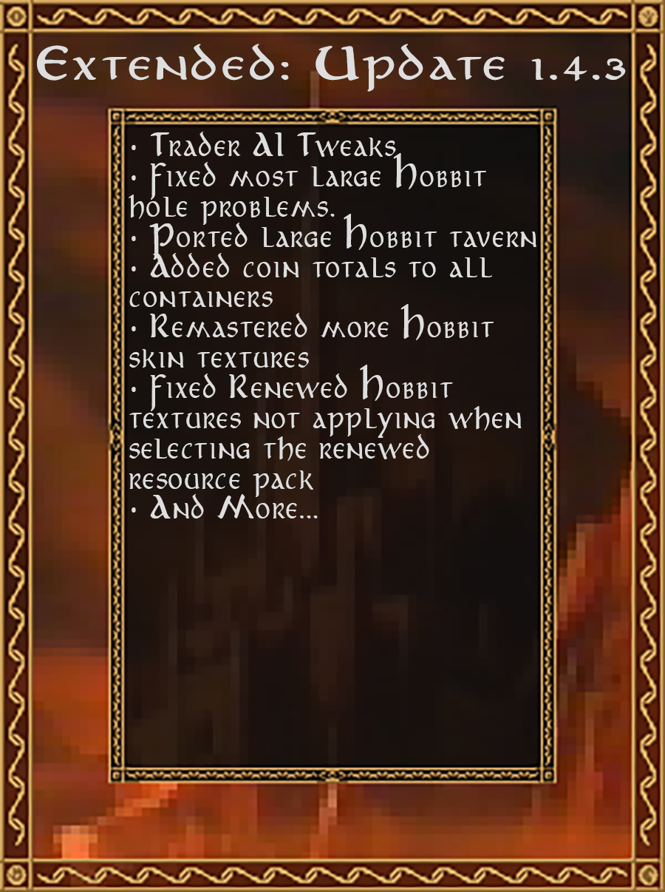

Updates
(Beta 1.7.4) (May 31st, 2025)
Bree cleanup and trader backend re-write

Beta 1.7.4 Release image
Changelog
- Blocks
- Added Grass Voids (an internal block to block grass from spawning in buildings on generation)
- Allowed moss carpets to be placed on leaves and hedges
- Allowed plants to be placed and grow on full slab faces (except bottom)
- Berry Bushes now grow into Berry Hedges over a long period of time
- Fixed Renewed wool slabs and stairs not being flammable and not burning
- Fixed berry hedge blocks not having a shadow
- Fixed plants not growing on mud, mud grass or remains ore
- Made berry bushes slow players a tiny bit
- Config
- Added a server setting to enable aggressive captains (unlike current legacy mechanics where they don’t attack unless provoked)
- Added a server setting to enable aggressive traders(unlike current legacy mechanics where they don’t attack unless provoked)
- Entities
- Fixed NPC interaction disabling shield blocking (fixes close combat shield PvE)
- Fixed Mordor and Uruk archers fighting melee with bows
- Features
- Fixed Slab/Stair chairs not working in Singleplayer
- Hired Units
- Fixed a bug in which hired units only fast travelled with players when they were set to stationary
- Fixed hired units not re-equipping base armor
- Items
- Added Bucket of Cheese Curds (right click to separate into two items)
- Fixed cheese curds eating buckets to craft (recipe now gives bucket of cheese curds)
- Fixed the Ranger Captain egg so the colors match Legacy
- Localization
- Fixed several lang mistakes
- Fixed the config command not being localized
- Misc
- Added 1 new secret advancement in Extended (2 currently)
- Added 4 new advancements in Extended (23 currently)
- Added a recipe to convert Barren Dirt to Dirt
- Fixed hired unit dataGen not working for other mods
- Fixed npc marriage data not saving properly
- Removed the duplicated Barrow Downs advancements
- Structures
- Added a DataPack compatible structure sign randomizer system.
- Added all new sign text lists for bree villages and hamlets, houses and professional buildings, as well as in hobbit houses and taverns
- Fixed hamlets spawning with up to 5 potter buildings (capped at 1 now)
- Fixed missing loot-tables and spawners in Bree Village stalls and tavern
- Updated Bree Village Butcher and Stonemason shops so they aren't confused for a house
- Updated all Bree structures to remove grass spawning inside buildings
- Textures/Models
- Fixed fur carpet block frill culling
- Trading
- Added different trader trade refusal messages
- Added legacy trader lockout and refresh logic after trading many items
- Finished entire trade system datapack compatible backend re-write
- Fixed traders not handling shift-click buying (no more having to buy one item at a time)
- Trader menu buttons are now greyed out if player is missing alignment
- WorldGen
- Fixed bonemeal spawning Athelas in the Barrow Downs
(Beta 1.7.3) (April 29th, 2025)
Added Bree Villages

Beta 1.7.3 Release image
Changelog
- Biomes
- Added Barrow Downs River (replaces rivers in the barrow downs to fix immersion breaking water color changes)
- Blocks
- Added Crucible (only a placeholder for now)
- Added Stripped Willow Branch
- Added Stripped Willow Log
- Added Stripped Willow Log Slab
- Added Stripped Willow Wood
- Added Stripped Willow Wood Slab
- Added Stripped Willow Wood Stairs
- Added Willow Branch
- Added Willow Button
- Added Willow Log Slab
- Added Willow Pressure Plate
- Added Willow Sign
- Added Willow Wood Slab
- Added Willow Wood Stairs
- Fixed large pots not having plant particles (like pipeweed)
- Ported Fallen Willow Leaves
- Ported Willow Beam
- Ported Willow Beam Slab
- Ported Willow Door
- Ported Willow Fence
- Ported Willow Fence Gate
- Ported Willow Leaves
- Ported Willow Log
- Ported Willow Planks
- Ported Willow Sapling
- Ported Willow Slab
- Ported Willow Stairs
- Ported Willow Trapdoor
- Ported Willow Vines
- Renamed Berry Plants and Bushes to Berry Hedges and Bushes respectively
- Standing banners can now be waterlogged
- Config
- Added a server config setting to disable Fast Travel to Default Waypoints
- Added a server config setting to disable Fast Travel to Custom Waypoints
- Added a server config setting to set dripstone damage fall height (because entities would receive damage of a heart for even a fall of 0.01 blocks)
- Added a client Hired Unit Death Messages setting to the client settings menu
- Added a client High Contrast Messages setting to the client settings menu
- Entities
- Added Bree-land Cheesemonger
- Added Bree-land Leatherworker
- Added Bree-land Stablemaster
- Added J. R. R. Tolkien
- Fixed Bree Guards not holding Bree shields
- Fixed Tolkien spawning list resetting on every server restart
- Fixed a client crash when rendering rangers with custom helmets (like leather hats)
- Fixed several entities using wrong skin overrides (textures)
- Fixed some entities not having correct health set
- Fixed wandering traders being able to spawn on slabs, stairs, and leaves
- Made captains non-aggressive like legacy
- Ported Bree-land Baker
- Ported Bree-land Brewer
- Ported Bree-land Butcher
- Ported Bree-land Florist
- Ported Bree-land Innkeeper
- Ported Bree-land Lumberman
- Ported Bree-land Smith
- Ported Bree-land Stonemason
- Removed the interacting lock from captains
- GUI
- Added hover messages to the Coin Exchange menu
- Added warning colors to some banner perm settings to indicate dangerous perms
- Finished Coin Exchange menu stability overhaul
- Fixed some banner configuration tooltips not disappearing
- Made the Hired Unit equipment inventory ranged slot only show for applicable unit types (currently rangers)
- Re-worked the Hired Unit equipment inventory and added a dedicated ranged weapon slot
- Re-worked the entire settings menu (and added all client config settings to the settings menu (since Forge does not have the built-in mod config menu anymore))
- Simplified and fixed unit order selection buttons
- Hired Units
- Fixed only Bree Guards having a death message
- Fixed unit hired confirmation message only saying bree-land guard
- Units can now have multiple weapon types given by the player and specified in JSON
- Items
- Added Willow Boats
- Loot Tables
- Added 18 new chest loot-tables for bree village chests (as opposed to a single table for legacy bree chests)
- Added a separate loot table for hamlet guard houses from normal houses
- Removed coin drops from hired units
- Misc
- Added 1 new advancements in Extended (19 currently)
- Added 3 advancements from Legacy (33.6% currently ported)
- Fixed Large Pot and Large Flower Pot recipes (use brick items vs brick blocks)
- Fixed planks from slab and stair recipes requiring multiple different block ingredients
- Fixed wood recipes missing recipe "groups"
- Structures
- Added Bree Villages
- Added Building blacklisting (certain builds can now only spawn once in a structure)
- Added an all new Bree Village Stable and Orchard building
- Added the ability for irregular structure pieces to spawn (like road lamp posts)
- Backported Mc1.21 waterloggable jigsaw setting
- Backported structure max distance template option
- Made Gundabad Captain tents rarer
- Made captains that spawn at tents permanent, and captains that randomly spawn at camp centers disappear on death.
- Universally fixed structures sinking into water by a block in Middle Earth
- Trading
- Added Cooked Duck to the Blue Mountains Merchant buy pool
- Fixed players being to steal items from trader inventories
- Wandering traders for each biome now spawn at different rates
- Wandering traders can no longer spawn on leaves, stairs and slabs
- Textures
- Add random rotation to the models of Dirt, Coarse Dirt, Barren Dirt, Moss Blocks, Jungle Mud, and Packed Fur
- Finally fixed the derpy model for leather hats
- Fixed banners and beds having weird break particles
- WorldGen
- Added Willow Trees and made them only spawn near bodies of water
- Barrow Downs now spawn with a the new Barrow Downs River biome
(Beta 1.7.Tolkien) (March 31st, 2025)
{kind=link}
Changelog
- Entities
- Added J. R. R. Tolkien
- Misc
- Fixed several critical bugs that couldn't wait until 1.7.3
(Beta 1.7.2) (February 28th, 2025)
Hired Unit Fixes

Beta 1.7.2 Release image
Changelog
- Blocks
- Fixed Axes not mining Wattle and Daub blocks faster
- Ported Bree-land Banner
- Config
- Changed structureBlockOutlineViewDistance option from a float to an integer (will cause the value to reset to default)
- Entities
- Added Hireable Gundabad Orc Units
- Added Hireable Dunedain Ranger Units
- Fixed Structure Entity spawners not rendering debug viewer when in dev mode
- Ported Gundabad Chieftains
- Ported Ranger of the North Captains
- Hired Units
- Added a Datapack driven system for defining hired units (localization strings, coin cost, pledge requirements, alignment threshold, base gear pools) (This enable modpacks or servers to tweak hired unit parameters)
- Added a new setting in the options menu to toggle FriendlyFire with hired units owned by the player
- Fixed some compatibility issues with LOTR: Companions (for R+E1.7.2 + future companions update)
- Fixed units Friendly Fire not respecting fellowship FriendlyFire settings
- Fixed units being immune to ally (own) arrows or self lit TNT (enableable via PvHU setting)
- Fixed units health bars not hiding when F1 is pressed (hideGui)
- Fixed units not Fast Traveling with their owner
- Fixed units not being damaged by owners when Friendly Fire was enabled (enableable via PvHU setting now)
- Fixed units not dropping player supplied equipment when killed.
- Fixed units not dropping their 9-slot inventory when killed
- Fixed units reviving themselves with passive healing after death. (becoming undead)
- Fixed units teleporting onto non-solid or invalid blocks
- Fixed units teleporting while in mid air
- Made base equipment not render in inventory when player equipped armor is present
- Units can now equip skulls, player heads, pumpkins (all 3 variants), and elytra (visual only)
- Items
- Added Bree Shields
- Added a Bree Banner Pattern
- Added a Hobbit Banner Pattern
- Buffed Morgul Armor to balance it because it does not have the weapon breaking feature
- Fixed shears not shearing some blocks faster
- Nerfed Taurethrim armor stats to align with legacy values
- Localization
- Added an initial Bosnian language translation (bs_ba) (Bosanski (Bosna i Hercegovina))
- Added an initial Croatian language translation (hr_hr) (Hrvatski (Hrvatska))
- Added an initial French language translation (fr_fr) (Français (France))
- Added an initial Serbian (Latin) language translation (sr_cs) (Srpski (Srbija))
- Added localization support for all the hired unit inventory strings
- Fixed Bree-land strings using Bree-Land
- Updated Chinese (Taiwan; Mandarin) translation (zh_tw) (繁體中文 (台灣))
- Updated Renewed’s Chinese (Taiwan) speechbank translations (zh_tw) (繁體中文 (台灣))
- Updated Renewed’s Chinese (Taiwan) translation (zh_tw) (繁體中文 (台灣))
- Loot Tables
- Fixed Bree Hamlets chests sometimes spawning with 25+ bows in a chest
- Misc
- Added Gemstone grinding to the Stone Grinder (Ores->Gems for Extended, Renewed, and Vanilla gems)
- Added chair denied status debug logging to troubleshoot player issues
- Fixed Stone Grinder turning bricks into bricks
- Fixed several items being in the wrong creative tabs
- Fixed two Rohan advancements having flipped names
- Renewed Patches
- Fixed a bug where player alignment bars render even if Team disallows nameplate rendering
- Potentially fixed the elusive (Drystone/WattleDaub) connected texture crash (Thanks to everyone who reported this issue, was I was able to track down the potential issue that was causing it, TLDR: Java 9+ changed some things that caused texture queries to sometimes conflict causing a ConcurrentModificationException)
- Textures
- Added an all new designed Bree Banner and Shield texture
- Reworked the leather hat model
- Updated Dunedain Shield texture
- Trading
- Fixed Oddment Collectors selling vanilla emeralds
(Beta 1.7.1) (January 21st, 2025)
Bree Hamlets

{kind=link}
Beta 1.7.1 Release image
Changelog
- Blocks
- Added Crossed Wattle and Daub
- Added Large Flower Pots (every vanilla/renewed/extended pot placeable plant compatible)
- Added Mordor Moss Vines
- Fixed packed/bundled/carpet fur not being shearable
- Made Fur carpets/slabs/stairs/walls flammable
- Made Moss Carpets only place on solid blocks (no floating moss now)
- Entities
- Added Bree Guard Hired Unit
- Added Breeland Potter
- Fixed Barrow Wights getting stuck in cobwebs
- Fixed Trader respawners spawning NPCs without giving them items they normally hold
- Made Barrow Wights have a 1.9 block tall collision box, but a 2.4 block tall hitbox
- Ported Bree-Land Sheriff
- Ported Breeland Farmer
- Commands
- Fixed the confusing layout of the /fellowship command
- Config
- Added a server config global NPC spawn dampening option, defaults to renewed spawn rates (configurable via the lotrExtendedConfig command)
- Added a server config option to adjust the one-time wight spawn chance
- Added a server config option to disable stair/slab sitting
- Added a server config option to disable stair/slab sitting in protected areas
- Added a server config option to disable stair/slab swapping
- Features
- Added a chanced one-time forced wight spawn mechanic (kinda like legacy)
- Added ability for players to sit on stairs and slabs
- Added initial Hired Units implementation from LOTR:Companions (almost 1.5 years in works)
- Added proper light/extinguish ,mechanics for torches (Rclick water drink or bottle to extinguish, Rclick with match or flintNSteel to light)
- Disabled stone chest GUI opening if a wight spawned
- Fixed fellowship members not being able to leave the fellowship (only owners could remove people)
- Fixed fellowships not appearing in the fellowships list for the members
- GUI
- Added Hired Unit Gui
- Added Unit Hiring Gui
- Items
- Added Chisels to the list of weapon rack displayable items
- Localization
- Fixed Fellowship command not being fully localized
- Loot Tables
- Added Loot Tables for Cups,Mugs, Goblets, and Ale Horns (drinks will be randomized in structure vessels going forward)
- Added Loot Tables for Plates (food will be randomized in structure plates going forward)
- Added Loot Tables for Weapon Racks (weapons will be randomized in structure weapon racks going forward)
- Added Stoneware Plates, Hobbit Pancakes, and Hobbit Crafting Tables to Hobbit bartender potential sells
- Added duck eggs/meat and plums to shire and ranger loot-tables
- Fixed Butter and Hobbit Pancakes being missing from their respective chest loot-tables
- Fixed a bug not letting Weapon Racks store a loot-table
- Fixed the damage for all equipment, weapons, and tools being inverted
- Misc
- Added 2 advancements from Legacy (33.1% currently)
- Changed save format of extended data file
- Fixed 1.7.0 making it impossible to left-click extinguish fire
- Fixed Orc Trapdoor and Orc Plating recipes conflicting
- Fixed boat crafting recipes giving four boats
- Fixed trading with Rivendell wanderer giving Hobbit farmer achievement
- Mossy Cobblestone can now be crafted using moss blocks and carpets
- Sounds
- Added use sound for Conquest Tables
- Structures
- Added Hamlets to Breeland
- Fixed Entity Spawners in structures bypassing safe spawning checks and raining down entities onto the ground (ranger watchtowers)
- Fixed a Gundabad Camp chest not having a loot-table
- Updated Barrow Downs structures with weapon rack loot-tables
- Updated Gundabad structures with weapon rack, plate and vessel loot-tables
- Updated Ranger structures with plate and vessel loot-tables
- Updated Shire structures with plate and vessel loot-tables
- Textures
- Added a dedicated item texture for Large Pots and Large Flower Pots
- Added new Arnor helmet model
- Added new textures for Arnor armor (worn and items)
- Fixed Goofy breaking particles for the Reed Basket
- Removed very outdated legacy texture pack
- Updated Wildberry item and block textures
(Beta 1.7.0) (November 25th, 2024)
Barrow Downs

Beta 1.7.0 Release image
Changelog
- Blocks
- Added Ancient Rune block (two variants, use chisel to change)
- Added Large Clay Pot
- Added Moss Block and Carpet
- Ported the Stone Grinder (formally the millstone)
- Commands
- Added banner protection enable/disable option to the config command
- Entities
- Added Bree Wandering Merchant
- Barrow Wights take no fall damage
- Fixed Dunedain Ranger’s models not scaling correctly to their new height
- Fixed Gundabad Uruk Archer name missing "Archer"
- Orcs spawn wearing fur armor much less now
- Ported Barrow Wights
- Removed spears from the Dunedain Rangers spawn equipment pool and added daggers and more sword types
- Features
- Added 1.17 Moss block functionality
- Added Banner Protection
- Added Barrow Wight Fog
- Added Barrow Wight jumpscare
- Made Copper blocks provide an 8x8 banner protection range
- GUI
- Added Barrow Down Biome+Label to ME map
- Made all-new Banner Configuration GUI (currently only four protection slots)
- Overhauled the Stone Grinder GUI
- Items
- Added Hobbit pancake with butter
- Added butter
- Made Warg fur helmets only obtainable from killing wargs now, not crafting
- Ported Hobbit pancake
- Ported Hobbit pancake with syrup
- Ported the Chisel
- Removed Morgul Spear & Dagger
- Localization
- Added Bree Merchant SpeechBanks
- Misc
- Added 73 new Stone Grinder recipes (slab/stairs/wall -> cracked variants)
- Added mossy drystone from cobbled drystone recipe
- Fixed Orc Trapdoor overriding Orc Bar recipe
- Structures
- Added barrows to the Barrow Downs (4 small,3 medium,3 large,2 giant)
- Fixed well ruins being surrounded by air pockets
- Sounds
- Added Duck walking (step) sounds (was using chicken step sounds before)
- Added a Cheese Wheel Slice sound
- Added new Barrow Wight spawn and death sounds
- Added new creepy/wight ambiance noises
- Added new sounds for rope breaking/placing/interacting
- Fixed cheese wheel playing slice sound on eating
- Updated Stone Chest close sound
- Textures
- Barrow Wights have all new textures and model
- Barrow Wights change texture and model when angry
- Hobbit pancakes have all new textures
- Moss carpets have frills on the edge
- WorldGen
- Added Moors grass to the Barrow Downs
- Added Moss to the Barrow Downs
- Ported Barrow Downs Biome
- Remains Ore now generates in the Dead marshes
- Remains Ore now spawns in swiss cheese like deposits
- Tweaked Barrow Downs colors
(Beta 1.6.2) (September 22nd, 2024)
{kind=link}
Changelog
- Blocks
- Ported Skull Goblet
- Added Goblin Bricks and Pillar
- Added Goblin Brick Slab
- Added Goblin Brick Stairs
- Added Goblin Brick Wall
- Added Goblin Pillar
- Added Goblin Pillar Slab
- Fixed Rope dupping as fast as wild rabbits
- Fixed Stone Chest not using the new open/close sounds
- Entities
- Ported Gundabad Uruk
- Ported Gundabad Uruk Archer
- Made Gundabad Uruks spawn naturally in the same 5 biomes as it did in legacy
- Made Gundabad Orc Archers, Mordor Orc Archers, and Uruk Archers use the Orc Bow
- Made Entity spawners in structures hide in in f1 mode (in creative)
- Made Rangers a bit taller (to be more lore accurate)
- Items
- Ported Gundabad Uruk Bow
- Ported Banana Beer
- Ported Plum Kvass
- Ported Orc Bow
- Ported Gundabad Uruk Helmet
- Ported Gundabad Uruk Chestplate
- Ported Gundabad Uruk Leggings
- Ported Gundabad Uruk Boots
- Ported Gundabad Uruk Cleaver
- Ported Gundabad Uruk Spear
- Ported Gundabad Uruk Dagger
- Localization
- Overhauled High Elven Speechbanks
- LootTables
- Fixed Ranger bow drops not being damaged
- Fixed Gundabad Camp Wood Chest not applying damage to axes
- Fixed Banana Cake and Cheese Wheels not dropping when broken if not eaten
- Nerfed Hobbit Treasure Chest LootTable
- Misc
- Added 2 advancements from Legacy (32.6% currently)
- Changed Creative inv bow ordering
- Fixed Angmar tools and weapons only being craftable on the vanilla table, instead of the Angmar crafting table
- Fixed Carved Angmar Brick not having a stonecutter recipe
- Fixed all Renewed and Extended Carved bricks not having a 2-slab crafting recipe
- Added additional chiseled block recipes to tie into R+E crafting scheme
- Added Tags for coins for datapackers/modders
- Changed Galvorn Ingot recipe to use Elven Steel Ingots instead of Iron Ingots
- Fixed Advancements having incorrect icons, descriptions, titles, and alignment unlocks
- Fixed Morgul/Angmar/Dol Guldur weapons not harvesting man flesh
- Fixed Cake, Banana Cake and Pumpkin Pie not being craftable with duck eggs
- Made Fur Bundles craftable on the vanilla crafting table
- Made Near Harad a friend of Dunland (to be lore accurate to history)
- Structures
- Added Orc spawners to some well ruins, and more ranger spawners to several layers of the ranger watchtower
- Raised the default respawn time and minimum player distance for entity spawners in structures
- Textures
- Updated Dale armor item textures in the Redone Renewed resource pack
- Updated Dorwinion Elven armor item textures in the Redone Renewed resource pack
- Updated Harad armor item textures in the Redone Renewed resource pack
- Updated Harnennor armor item textures in the Redone Renewed resource pack
- Updated Ithilien Ranger armor item textures in the Redone Renewed resource pack
- Updated Umbar armor item textures in the Redone Renewed resource pack
- Updated Rohan Marshal armor item textures in the Redone Renewed resource pack
- Updated Dunlanding armor item textures in the Redone Renewed resource pack
- Trading
- Fixed quick stacking removing items directly from trade menu
- Fixed players from placing items in "Buy Items" inventory (causing a crash)
- Fixed Oddment collector missing two departure speech lines
- Raised Rivendell Wanderer’s required alignment to trade to 100
- WorldGen
- Fixed Berry Bushes(Plants) spawning outside of the Middle Earth dimension
(Beta 1.6.1) (September 7th, 2024)
{kind=link}
Changelog
- Blocks
- Added Bone Block Slab
- Added Bone Block Stairs
- Added Bone Block Wall
- Added Mossy Arnor Pillar Slabs
- Added Mossy Arnor Pillars
- Added Orc Steel Chain
- Changed Packed fur block tab (decoration->building)
- Ported Rope
- Items
- Added legacy ability for different bows to have different draw speeds
- Fixed Bow models rendering incorrectly in first-person view
- Fixed Ranger Bow and Longbows not being repairable. (Repairable with Bowstring now)
- Ported Orc Bow
- Entities
- Added Trader Respawners (that floating coin thingy)
- Gundabad Orc Traders equip warg armor with same rarity as Gundabad Warg color rarity
- Made Ducks Spawn naturally
- Made Elven Traders properly hold coins in their hand
- Mordor Orcs can now spawn with Black and Brown Warg Fur armor
- Ported Blue Mountains Wandering Trader
- Ported Gundabad Orc Scrounger (found in orc encampments)
- Localization
- Fixed Dunedain Banner Patterns not using accented Dunedain description
- Updated Chinese (Taiwan) translation (zh_tw)
- Loot Tables
- Applied Random Damage to all Structure Chest loot-table's Armor/Tools/Weapons
- Overhauled Gundabad Camp Supply Chest loot-tables (32 -> 73 items)
- Misc
- Added 1 advancements from Legacy (32.3% currently)
- Added 2 new advancements in Extended (18 currently)
- Added Gemstone Smelting Recipes for furnaces
- Added Recipes to convert between different torch types
- Added Warg Fur Armor and Bone Weapon/Tools to Gundabad and Isengard Orc equipment pools
- Allowed Melon and Pumpkin stems to grow Melons and Pumpkins on Barren Dirt
- Changed Advancement Colors
- Fixed Extended’s Bookshelves not supplying enchanting power to Enchanting Tables
- Fixed Java 9+ compatibility issues in renewed
- Fixed roast duck recipe unlocking from conkers
- Made Berries, Berry Bushes, Conkers, Roasted Chestnuts, Plums, Bananas, and Banana Bread compostable
- Made Cheese Wheels, Cherry Pie, Apple Crumble, Cake (vanilla mc cake) drop as an item if there a no bites when broken (normally they can never be picked back up once placed)
- Sounds
- Add new Unique Open/Close sounds for the Stone Chest
- Structures
- Added Gundabad Encampments (6 variants)
- Disabled Large Hobbit Hole spawning due to issues with it
- Fix wood pallets incorrectly handling vanilla verticalized slabs
- Fixed Ranger Hideouts being in Lone Lands and Eriador (needs to be in forested areas)
- Textures
- Remastered Orc Bow texture
- Synced Bow model speed to bow dependent Draw Speed
- Updated Bedroll texture
- Updated Gray and Silver Packed fur and Bundled fur block textures
- Updated Gray and Silver fur textures
- Updated Rope item texture
- Updated White and Black Packed fur and Bundled fur block textures
- Updated White and Black fur texture
- Updated all Warg armor models and textures
- Trading
- Added 7 Missing Trades back to Hobbit Bartender (including Smoking Pipe)
- Added Depart and Death chat messages for wandering traders
- Corrected biome lists so all currently added Wandering Traders properly spawn in it’s legacy biomes
- Fixed client crash when shift-clicking on a sold-out trade slot
- Make spawn message match format of legacy
- Prevent wandering traders from spawning for players in creative or spectator game modes
- Updated shift-click buying only buying a max of 64 items, not ultra-maxing out your inventory
- WorldGen
- Made Berry Bushes Spawn Naturally in approximately all the same legacy biomes
(Beta 1.6.0) (August 7th, 2024)
Gundabad Camps

Beta 1.6.0 Release image
Note: This version was re-uploaded to fix a critical bug
Changelog
- Blocks
- Added Banana Branch
- Added Banana Wood
- Added Banana Wood Slab
- Added Banana Wood Stairs
- Added Black Warg Fur Carpet
- Added Brown Warg Fur Carpet
- Added Gray Warg Fur Carpet
- Added Orc Barrel
- Added Orc Steel Door
- Added Orc Steel Trapdoor
- Added Plum Branch
- Added Plum Wood
- Added Plum Wood Slab
- Added Plum Wood Stairs
- Added Silver Warg Fur Carpet
- Added Stripped Banana Branch
- Added Stripped Banana Wood
- Added Stripped Banana Wood Slab
- Added Stripped Banana Wood Stairs
- Added Stripped Plum Branch
- Added Stripped Plum Log
- Added Stripped Plum Log Slab
- Added Stripped Plum Wood
- Added Stripped Plum Wood Slab
- Added Stripped Plum Wood Stairs
- Added White Warg Fur Carpet
- Made Conquest Table change texture by Shift-Click placing
- Made Conquest Table place directional
- Ported Blue Mountains Banner
- Ported Durin’s Folk Banner
- Ported Fallen Plum Leaves
- Ported Gundabad Orc Banner
- Ported Morgul Chandelier
- Ported Orc Chandelier
- Ported Plum Beam
- Ported Plum Beam Slab
- Ported Plum Button
- Ported Plum Door
- Ported Plum Fence
- Ported Plum Fence Gate
- Ported Plum Leaves
- Ported Plum Log
- Ported Plum Log Slab
- Ported Plum Planks
- Ported Plum Planks Slab
- Ported Plum Planks Stairs
- Ported Plum Pressure Plate
- Ported Plum Sapling
- Ported Plum Sign
- Ported Plum Trapdoor
- Ported Uruk Chandelier
- Commands
- Added a command to set extended server config values in-game (sort of like /gamerules)
- Fixed a few issues with the fellowship command
- Entities
- Added Ducks
- Added many Vanilla, Renewed, and Extended foods as duck feedables
- Implemented a system for making gendered mobs
- Made ducks use different textures based upon gender
- GUIs
- Made Trader GUI close when button clicked with low alignment
- Optimized the layout of the Options GUI
- Items
- Added Black Warg Helmet, Chestplate, Leggings, Boots
- Added Bone Axe
- Added Bone Dagger
- Added Bone Hoe
- Added Bone Pickaxe
- Added Bone Shovel
- Added Bone Spear
- Added Bone Sword
- Added Brown Warg Helmet, Chestplate, Leggings, Boots
- Added Cooked Duck Meat
- Added Duck Meat
- Added Duck eggs that ducks randomly drop currently how chickens work too (These duck eggs spawn baby ducks)
- Added Gray Warg Helmet, Chestplate, Leggings, Boots
- Added Gundabad Banner Pattern
- Added Gundabad Shield
- Added Plum Boat
- Added Silver Warg Helmet, Chestplate, Leggings, Boots
- Added White Warg Helmet, Chestplate, Leggings, Boots
- Ported Plum
- Language
- Added Chinese (Taiwan) translation (zh_tw)
- Added dedicated speech-banks for a Hobbit Bartenders and Farmers
- Added localization for bow stats (damage, range, speed)
- Added localization for the entire fellowship command
- Fixed a typo with Dunedain Banners
- Updated Russian localization
- Misc
- Added 2 new advancements in Extended (16 currently)
- Added 52 advancements from Legacy (31.9% currently)
- Added a message in the Fellowship GUI to use the command
- Added a setting for servers to require metal doors and trapdoors added by extended to be powered to open
- Changed Morgul Lantern recipe to use one Morgul Torch surrounded by Orc Steel Nuggets
- Enabled Renewed ResourcePack by default
- Fixed an issue with consuming advancements triggering by just holding the item
- Made Bedrolls, Branding Irons, and Orc Barrels use forge:leather tag in their recipes (allowing for modded leathers to be used)
- Tweaked Chest loot-tables across the board to reduce the rate of OP loot
- Updated Advancement Task/Goal/Challenge colors
- Updated Master Hunter advancement to use warg armors instead of fur armor
- Sounds
- Added all new Hurt, Death and Ambiance sounds for Ducks
- Added new Reed Basket Open/Close sounds
- Structures
- Added General Ruin altar variants (12 small, 8 large, 4 grand)
- Added General Ruined Turret variants (4 versions)
- Added General Ruined Wall variants (7 states of decay)
- Added General Ruined Wells variants (10 versions)
- Added Gundabad Camps in all applicable renewed biomes
- Added Ruined Arnor Towers (12 versions)
- Added Ruins structures to the Trollshaws
- Finished DataDriven (dataPackable) Entity Spawner System for Structures
- Finished Dynamic Wood Pallets for Structures. (WIP since December) (All Vanilla+Renewed+Extended Wood pallets)
- Fixed Ranger Camp fir wood type sometimes spawning halved firepits
- Nerfed structure spawn rates across the board to spread structures out a bit more
- Tweaked Ruin pools to have make some structures spawn more than others
- Updated all relevant structures with the new entity spawner
- Textures
- Finally added a model and textures to the Conquest Table
- Fixed Small banners having a dark shadow shading
- Remastered Blue Mountains Banner texture
- Remastered Durin’s Folk Banner texture
- Remastered Gundabad Orc Banner texture
- Remastered Morgul Chandelier texture
- Remastered Orc Chandelier texture
- Remastered Plum Wood type textures
- Remastered Plum texture
- Remastered Uruk Chandelier texture
- Trading
- Added a tooltip that shows the cooldown and number of items left on a trade
- Allowed talking to traders even if you don't have the required alignment to trade/exchange coins with them
- Implemented new Wandering Trader system
(Beta 1.5.2) (June 25th, 2024)
Fixes a server crash with bedrolls and players spawning
Changelog
- Blocks
- Fixed a bug with bedroll events and players spawning in servers for first time
- Fixed Hobbit and Dunedain banner’s dropping incorrectly (double or nothing drops)
- Language
- Fixed a typo with Hobbit Banners
- Misc
- Added more compat for Lotr: Companions
- Added server setting to disable fishing enchanted items in Middle Earth
- Remove broken hacky fishing loot-table
- Structures
- Fixed structure block items being saved in some ranger tents
(Beta 1.5.1) (June 21st, 2024)
{kind=link}
Changelog
- Blocks
- Added Hanging Bananas
- Fixed an infinite berry glitch with bushes
- Made Bedrolls not set the players spawnpoint
- Made banner size toggleable by shift clicking
- Merged Chestnut Flowery Leaves with Chestnut Leaves
- Ported Cracked Arnor Pillar
- Ported Cracked Arnor Pillar Slab
- Ported Dunedain Banner
- Ported Hobbit Banner
- Entities
- Added more unique death loot-tables to traders
- Fixed Dunedain Rangers not spawning with Iron Swords and having a double rate to spawn with an Arnor Spear
- Fixed Elven Wanderers hair still showing despite them having hoods
- Items
- Added Banana Tree Gen to Banana Saplings
- Fixed Dunedain Bow and Longbow not having drawing animations
- Ported barrow blades
- Language
- Added Chinese translation
- Added Russian Translation
- Added Speechbanks for Blue Mountains Dwarf Archers
- Added Speechbanks for Bree
- Fixed Galadhrim Wanderer not having speachbanks
- Misc
- Added 4 new (non-legacy) advancements
- Added 52 advancements from Legacy (7.8%) (Includes Assorted General, Eriador and Shire categories)
- Added Dunedain Banner Pattern recipe using the Dunedain Banner
- Added Trader (entity) buy/sell advancement triggers
- Added Trader item specific buy/sell advancement triggers
- Adjusted Berry Nutrition and Saturation values
- Adjusted Cheese Slice, Banana, Banana Bread, and Roasted Chestnut saturation values
- Fixed a bug that made it impossible to make custom waypoints
- Adjusted ranger structure chest loot-table weights
- Structures
- Added Arnor Ruins (3 variants)
- Added Ranger Forts, Encampments (with captain variant)
- Added ranger Structures to the Enedwaith biome
- Tweaked ranger structure spawn distances
- Updated ranger structures to have banners on both sides
- Textures
- Added More Variations to Chestnut Flower Leaves texture
- Added More Variations to Chestnut Leaves texture
- Remastered Wood-Elven Armor Item textures (Renewed Pack)
- Changed Chestnut Leaves texture weights
- Fixed Jungle Mud Grass Snowy texture being gone (since beta 1.3ish)
- Updated Amber Block texture
- Updated Amber Ore texture
- Updated Amber texture
- Updated Banana texture
- Updated Black Uruk Ingot texture
- Updated Blackberry Bush texture
- Updated Blackberry Plant texture
- Updated Blackberry texture
- Updated Bowstring texture
- Updated Gilded Iron texture
- Updated Morwaith Crafting Table texture
- Updated Obsidian Shard texture
- Updated Pearl texture
- Updated Silver Coin (1) texture
- Updated Silver Coin (10) texture
- Updated Silver Coin (100) texture
- Updated Warg Bone texture (Renewed Pack)
- Trading
- Fixed a few trader issues
- Restricted trading with traders to a set alignment threshold (trader specific value)
(Beta 1.5.0) (May 14th, 2024)
Added Ranger Camps

Beta 1.5.0 Release image
Changelog
- Blocks
- Added Ability for Weapon Racks to have loot-tables
- Added Aged Cheese Wheel
- Added Barren Dirt Slabs
- Added Bedroll
- Added Coarse Dirt Slabs
- Added Dirt Slabs
- Added Fallen Banana Leaves
- Added Fallen Chestnut Leaves
- Added Grass Block Slabs
- Added Grass Path Slabs
- Added Mycelium Slabs
- Added Ornate Golden Rohan Beams
- Added Ornate Rohan Beams
- Added Podzol Slabs
- Added Stripped Banana Log
- Added Stripped Banana Log Slab
- Bookshelves work as book storage (book, written book, writable book, red book, book of true silver, knowledge book)
- Changed the Cheese Wheel eat sound
- Ported Banana Beam
- Ported Banana Beam Slab
- Ported Banana Button
- Ported Banana Cake
- Ported Banana Door
- Ported Banana Fence
- Ported Banana Fence Gate
- Ported Banana Leaves
- Ported Banana Log
- Ported Banana Log Slab
- Ported Banana Planks
- Ported Banana Planks Slab
- Ported Banana Planks Stairs
- Ported Banana Pressure Plate
- Ported Banana Sign
- Ported Banana Trapdoor
- Ported Carved Black Umbar Brick
- Ported Carved Umbar Brick
- Ported Golden Rohan Beams
- Ported Rohan Beams
- Ported Weapon Rack
- Ported the Reed Basket
- Entities
- Added 154 new entity name combinations for other races
- Added 309 new entity name combinations for Orcs
- Overhauled the Ranger of the North's speechbank
- Ported Galadhrim Wanderers
- Ported Ranger of the North
- Ported Rivendell Wanderers
- Features
- Made Cheese Wheels age (kinda like 1.17 copper blocks)
- Made Grass spread from Grass Block Slabs to Dirt Slabs and Dirt Blocks
- Made Grass spread from Grass Blocks to Dirt Slabs
- Made Mycelium spread from Mycelium Blocks to Dirt Slabs
- Made Mycelium spread from Mycelium Slabs to Dirt Slabs and Dirt Blocks
- Items
- Added 3 new banner patterns: Durin, Dunedain, Blue Mountains
- Added Aged Cheese Slice
- Added Banana Boat
- Added Bowstring
- Added Dunedain Shield
- Added Longbow
- Fixed Branding Irons not using durability when branding
- Fixed Taurethrim Sword not giving knock-back (club behavior)
- Ported Banana
- Ported Banana Bread
- Ported Banana Sapling
- Ported Dunedain Bow
- Tweaked the Morgul, Angmar, and Dol Guldur attack and durability values to align with legacy’s
- Tweaked the rendering positions of extended's bed items
- Misc
- Add 114 missing stonecutter recipes for extended's blocks
- Add 3 missing stonecutter recipes for renewed's blocks
- Structures
- Added Ranger Hideout Houses
- Added Ranger Hideouts
- Added Ranger Ruined Houses
- Fixed a crash when generating kegs in taverns
- Fixed the Large Hobbit Tavern bartender escaping the bar
- Fixed the Large Hobbit Tavern basement being blocked by dirt
- Ported Ranger Watchtowers
- Ported and Re-designed Ranger Camps
- Removed Large (Hobbit Hole/Tavern) from shire moors, white downs, and shire woodlands
- Textures
- Added a remastered texture for mallorn swords to the renewed pack
- Added a remastered texture for the Blacksmith Hammer texture to the renewed pack
- Changed extended's beds break particle texture
- Fixed Mud Path Slab double slab graphical glitch
- Fixed Ranger and Hobbit Table Bottoms in Renewed Pack having invalid textures
- Fixed Wood and Log slab texture rotations
- Remastered All Banana Wood type textures
- Remastered Ranger Armor item textures
- Updated Amber Block texture
- Updated Amber Ore texture
- Updated Amber texture
- Updated Amethyst texture
- Updated Angmar's Tools, Weapons and Armor textures
- Updated Blackberry Bush texture
- Updated Blackberry Plant texture
- Updated Blackberry texture
- Updated Carved Dol Guldur Brick texture
- Updated Chestnut Leaves texture
- Updated Cracked Dol Guldur Brick texture
- Updated Dol Guldur Brick texture
- Updated Dol Guldur Crafting Table texture
- Updated Dol Guldur Pillar texture
- Updated Dol Guldur's Tools, Weapons and Armor textures
- Updated Galvorn Ingot texture
- Updated Gilded Iron Ingot texture
- Updated Mossy Dol Guldur Brick texture
- Updated Mossy Mud Brick texture
- Updated Pearl Block texture
- Updated Pearl texture
- Updated Topaz Block texture
- Updated Topaz Ore texture
- Updated Topaz texture
- Updated Wildberry Bush texture
- Updated Wildberry Plant texture
- Updated Wildberry texture
- Updated the Rivendell Armor item texture in the renewed pack
- Trading
- Fixed a server crash when trading with traders
- Made Coins with custom NBT data not tradable
(Beta 1.4.3) (March 31st, 2024)
Large Hobbit Tavern and other Fixes

{kind=link}
Beta 1.4.3 Release image
Note:* This release was originally on March 30th, but was re-uploaded to fix a critical bug
Changelog
- Blocks
- Allowed for plants to be placed on barren dirt
- Entities
- Tweaked the AI of some traders
- Misc
- Fixed Chestnut Planks recipe still being broken
- Fixed Container names being removed (bug with addition of inv coin totals)
- Structures
- Ported the Large Hobbit Tavern
- Fixed the Large Hobbit Hole chimneys not spawning
- Fixed the Large Hobbit Hole entrance chests not having loot
- Fixed the Large Hobbit Hole floating/not having foundations
- Fixed some Large Hobbit Hill piece bugs
- Structures should now only rarely spawn on roads ()-()
- Updated the Large Hobbit Hill shape
- Textures
- Remastered 7/13 Adult Female Hobbit Skins
- Fixed Renewed Hobbit textures not applying when selecting the renewed resource pack
- Updated Morgul Steel Ingot texture
- Trade System
- Added coin total within creative inventory
- Added coin total within Faction crafting tables
- Added coin total within Furnace screens
- Added coin total within Blast Furnace screens
- Added coin total within Hobbit Ovens and all LOTR Alloy forges
- Added coin total within pouches
- Added coin total within the crafting table
- Fixed coin totals being hidden when in creative
(Beta 1.4.2) (March 27th, 2024)
Large Hobbit Hole and fur beds

Beta 1.4.2 Release image
Changelog
- Blocks
- Added Black Fur bed
- Added Gray Fur bed
- Added Silver Fur bed
- Added Smoke Particles to Morgul torches
- Added White Fur bed
- Ported Fur bed
- Ported Obsidian Dwarven Brick
- Ported Obsidian Dwarven Brick Slab
- Ported Obsidian Dwarven Brick Stairs
- Ported Obsidian Dwarven Brick Wall
- Ported Orc bed
- Ported Straw Bed
- Features
- Gems now spawn naturally throughout Middle-Earth
- Misc
- Fixed Chestnut Planks recipe being a sign recipe
- Structures
- Added the Large Hobbit Hole
- Textures
- Fixed texture issues for all pillar slabs
- Remastered 13/13 Adult Male Hobbit Skins
- Remastered 3/13 Adult Female Hobbit Skins
- Remastered Fur Bed texture
- Remastered Obsidian Dwarven Brick texture
- Remastered Orc Bed texture
- Remastered Straw Bed texture
- Tweaked the mud path texture layout
- Trade System
- Added coin total to the player inventory screen
- Added coin total within chests (including stone chests)
(Beta 1.4.1) (March 16th, 2024)
Fixes
Changelog
- Blocks
- Fixed being unable to cut cheese wheels if not hungry or in creative
- Made all of Renewed's Torches Toggleable
- Entities
- Fixed loot-tables to use extended's loot-tables (proper warg fur color, etc)
- Features
- Added Chestnut Trees to remaining legacy spawning biomes that have been currently ported
- Items
- Made Conkers Throwable and Dispensable
- Textures
- Fixed the broken Scorched Stone rotated textures
- Fixed Mud's texture seemingly rotating itself
- Updated Sapphire Ore texture
- Fixed the Built-in Legacy and Renewed ResourcePacks always being disabled on start (even if you had previously enabled them)
- Trade System
- Fixed Buggy Behavior when coins are dispensed when trading
- Added Total Coin Earnable to Trade GUI
- Fixed buggy behavior caused by clicking traders with a spawn egg
(Beta 1.4.0) (March 12th, 2024)
{kind=link}
Changelog
- Blocks
- Added Chestnut Branch
- Added Chestnut Wood
- Added Chestnut Wood Slab
- Added Chestnut Wood Stairs
- Added Cracked Mud Bricks
- Added Cracked Red Rhûnic Brick
- Added Cracked Red Rhûnic Brick Slab
- Added Cracked Red Rhûnic Brick Stairs
- Added Cracked Red Rhûnic Brick Wall
- Added Green Flame Block
- Added Green Flame Hearth
- Added Mossy Mud Bricks
- Added Mossy Red Rhûnic Brick
- Added Mossy Red Rhûnic Brick Slab
- Added Mossy Red Rhûnic Brick Stairs
- Added Mossy Red Rhûnic Brick Wall
- Added Scorched Brick
- Added Scorched Brick Slab
- Added Scorched Brick Stairs
- Added Scorched Brick Wall
- Added Scorched Cobblestone Slab
- Added Scorched Cobblestone Stairs
- Added Scorched Cobblestone Wall
- Added Scorched Stone
- Added Scorched Stone Slab
- Added Scorched Stone Stairs
- Added Scorched Stone Wall
- Added Stripped Chestnut Branch
- Added Stripped Chestnut Log
- Added Stripped Chestnut Log Slab
- Added Stripped Chestnut Wood
- Added Stripped Chestnut Wood Slab
- Added Stripped Chestnut Wood Stairs
- Fixed Morgul Torch not having it's new custom particle
- Made the particles and output light for extended's torches toggleable
- Ported Barren Dirt
- Ported Chestnut Beam
- Ported Chestnut Beam Slab
- Ported Chestnut Button
- Ported Chestnut Door
- Ported Chestnut Fence
- Ported Chestnut Fence Gate
- Ported Chestnut Leaves
- Ported Chestnut Log
- Ported Chestnut Log Slab
- Ported Chestnut Planks
- Ported Chestnut Planks Slab
- Ported Chestnut Planks Stairs
- Ported Chestnut Pressure Plate
- Ported Chestnut Sign
- Ported Chestnut Trapdoor
- Ported Scorched Cobblestone
- Ported Stone Chest
- Items
- Added Chestnut Boat
- Added Orc Steel Nugget
- Gave Horn of Command a different texture depending on its type (ready/halt or summon)
- Made Bottle of Poison stack to 16
- Ported Chestnut Sapling
- Ported Taurethrim Dagger
- Ported Taurethrim Spear
- Porting Branding Iron
- Entities
- Ported Oddment Collector
- Features
- Added Chestnut Trees to the Shire Biomes
- Added Chestnut Trees with Beehives
- Added Large Chestnut Trees with Beehives
- Ported Chestnut Party Trees
- Ported Chestnut Trees
- Ported Large Chestnut Trees
- Misc
- Added Stats for Slicing Cheese Wheels, Creating Fellowships, Disbanding Fellowships, and Trading with Traders
- Added more waypoint config options for servers
- Fixed Cheese Slices not adding to the statistic when eaten
- Fixed Stats not using their localized description names
- Fixed horn sounds not playing
- Remapped ID Grey Fur -> Gray Fur
- Structures
- Added Alternate Variants For Hobbit Picnic tables, Small Hole, and Tavern
- Added Roasted Chestnuts and Conkers to Hobbit Structure loot-tables
- Changed Hobbit House spawn distributions
- Fixed Shire structures not spawning in Shire Woodlands, Shire Moors, or the White Downs
- Fixed some Shire Structure chests not having loot
- Updated Hobbit Barn, House, and Windmill
- Textures
- Added Cheese Curds texture
- Added pack image for legacy textures resourcepack
- Fixed Legacy texture pack remains ore
- Fixed missing texture for Dwarf Remains Ore
- Remastered All Chestnut Wood type textures
- Remastered Jungle Grass texture
- Remastered Lindon and Rivendell armor texture in renewed resource pack
- Remastered Taurethrim Dagger texture
- Remastered Taurethrim Spear texture
- Revamped Packed Fur textures
- Updated Amethyst Block texture
- Updated Amethyst Ore texture
- Updated Angmar Equipment textures
- Updated Angmar Weapons/Tools textures
- Updated Black Fur texture
- Updated Carved Dol Guldur Brick texture
- Updated Carved Red Rhûnic Brick texture
- Updated Coin(1,10,100) textures
- Updated Cracked Dol Guldur Brick texture
- Updated Diamond Ore texture
- Updated Diamond texture
- Updated Dol Guldur Brick texture
- Updated Dol Guldur Crafting Table texture
- Updated Dol Guldur Equipment textures
- Updated Dol Guldur Pillar texture
- Updated Dol Guldur Weapons/Tools textures
- Updated Elderberry texture
- Updated Emerald Block texture
- Updated Emerald Ore texture
- Updated Emerald texture
- Updated Galvorn Block texture
- Updated Galvorn Ingot texture
- Updated Gilded Iron Block texture
- Updated Ithildin texture
- Updated Morgul Equipment textures
- Updated Morgul Lantern texture
- Updated Morgul Steel Ingot texture
- Updated Mossy Dol Guldur Brick texture
- Updated Mud Brick texture
- Updated Mud Path texture
- Updated Mud Farmland textures
- Updated Mud texture
- Updated Opal Ore texture
- Updated Pearl Block texture
- Updated Raspberry texture
- Updated Red Rhûnic Brick texture
- Updated Red Rhûnic Pillar texture
- Updated Rhûnic Crafting Table texture
- Updated Ruby Block texture
- Updated Ruby Ore texture
- Updated Ruby texture
- Updated Silver Fur texture
- Updated Taurethrim Equipment textures
- Updated Taurethrim Weapons/Tools textures
- Updated Topaz Ore texture
- Updated Topaz texture
- Updated White Fur texture
- Trading System
- Ported NPC trading, Hobbit Bartender, Farmer, and Oddment Collector trades
(Beta 1.3.0) (February 13th, 2024)
Misc and hobbit stuff
Changelog
- Blocks
- Added Gold Trimmed Rhûnic Brick Slab
- Added Gold Trimmed Rhûnic Brick Stairs
- Added Gold Trimmed Rhûnic Brick Wall
- Added Jungle Mud Path Stairs
- Added Jungle Mud Stairs
- Added Remains Ore (Man, Orc, Elf, and Dwarf variants)
- Added Smooth Stone Stairs
- Added a Cheese Wheel
- Added a Stone Taurethrim Crafting Table variant
- Added custom particles for Morgul Torches
- Fixed Berry Plants planting as full plants
- Fixed Incorrect Rotation for Morgul Torches
- Ported Black Carved Gondor Brick
- Ported Jungle Farmland
- Ported Jungle Grass Block
- Ported Jungle Mud
- Ported Jungle Mud Bricks
- Ported Jungle Mud Bricks Slab
- Ported Jungle Mud Bricks Stairs
- Ported Jungle Mud Bricks Wall
- Ported Jungle Mud Path
- Ported Jungle Mud Path Slab
- Ported Jungle Mud Slabs
- Items
- Added Cheese Curds
- Added Morgul Dagger
- Added Morgul Spear
- Added an edible Cheese Slice
- Fixed Tools and Swords incorrect handheld item rotation
- Ported Angmar Dagger
- Ported Angmar Spear
- Ported Dol Guldur Dagger
- Ported Dol Guldur Spear
- Ported Conker
- Ported Roasted Chestnuts
- Features
- Added Hobbit Picnic Blankets
- Added Hobbit Picnic Tables
- Fixed Hobbit farmers escaping the barn
- Made structure spawn earlier on chunk creation, stopping them from generating on top of trees
- Made structures locatable with the /locate command
- Revamped structure generation system (SGSv5)
- Misc
- Added DataGen for stats description localization
- Changed some logging levels
- Fixed typo in White Packed Fur blocks spellings
- Re-locked ME map to east-south bounds
- Textures
- Fixed a minor pixel error on Morgul Steel Block texture
- Fixed swapped Morgul block textures
- Remastered Angmar Dagger texture
- Remastered Dol Guldur Dagger texture
- Remastered the bottom texture of 9 renewed crafting tables (put in the renewed built-in pack)
(Beta 1.2.1) (January 17th, 2024)
Fix despawning hobbit traders
Changelog
- Entities
- Stop Hobbit traders naturally despawning
- Misc
- Remove extra space hiding in Black Fur Bundle lang
- Added support for patch versions in the update checker
(Beta 1.2) (January 16th, 2024)
Added Berries
Changelog
- Blocks
- Added Blackberry Plant
- Added Blueberry Plant
- Added Cranberry Plant
- Added Elderberry Plant
- Added Raspberry Plant
- Added Wildberry Plant
- Added Smooth Gondor Rock Stairs
- Added Smooth Rohan Rock Stairs
- Added Smooth Mordor Rock Stairs
- Added Smooth Luigon Rock Stairs
- Added Smooth Cargon Rock Stairs
- Entities
- Fixed wargs not always dropping fur based upon their color
- Features
- Fixed Legacy Hobbit Hole Sign Rotation
- Revamped structure system (v3) (direction, rotation, origin point)
- GUIs
- Temporarily disabled the Coin Exchange GUI
- Misc
- Add Localization for all items and block and most GUI elements
- Added Automatic DataGen for Block and Item Models, Blockstate definitions, Crafting Recipes, Block and Items Tags, Loot-tables
- Added an Update Checker!
- Textures
- Added Built-in Legacy Texture Pack
- Added Built-in Texture Pack for remasters of Renewed items/blocks that still had Legacy textures
- Remastered Warg Bone texture
- Updated Amber Block texture
- Updated Amber Ore texture
- Updated Amethyst Ore texture
- Updated Black Fur texture
- Updated Blackberry Bush texture
- Updated Carved Rhûnic Brick texture
- Updated Coral Block (storage) texture
- Updated Coral texture
- Updated Cracked Rhûnic Brick texture
- Updated Diamond Block texture
- Updated Diamond Ore texture
- Updated Diamond texture
- Updated Elderberry Plant texture
- Updated Emerald Ore texture
- Updated Flowery Rhûnic Brick texture
- Updated Galvorn Block texture
- Updated Galvorn Ingot texture
- Updated Gold Trimmed Rhûnic Brick texture
- Updated Grey Fur texture
- Updated Morgul Steel Block texture
- Updated Morgul Steel Ingot texture
- Updated Mossy Rhûnic Brick texture
- Updated Pearl Block texture
- Updated Pearl texture
- Updated Red Carved Rhûnic Brick texture
- Updated Red Rhûnic Brick texture
- Updated Red Rhûnic Pillar texture
- Updated Rhûnic Brick texture
- Updated Rhûnic Crafting Table texture
- Updated Rhûnic Pillar texture
- Updated Ruby Block texture
- Updated Ruby Ore texture
- Updated Ruby texture
- Updated Sapphire Block texture
- Updated Sapphire Ore texture
- Updated Sapphire texture
- Updated Silver Coin (1) texture
- Updated Silver Coin (10) texture
- Updated Silver Fur texture
- Updated Topaz Block texture
- Updated Topaz Ore texture
- Updated Topaz texture
- Updated White Fur texture
(Beta 1.1) (December 31st, 2023)
Leather Hat and hobbit trader spawn crashes
Changelog
- Items
- Ported Leather Hat
- Fixed Morgul Blade being small when held in the hand
- Entities
- Ported Hobbit Farmer NPC
- Features
- Fixed Hobbit Bartenders not spawning in taverns and crashes
- GUIs
- Ported Coin Exchange GUI
- Textures
- Updated Amethyst texture
- Updated Amethyst Ore texture
- Updated Amethyst Block texture
- Updated Sapphire texture
- Updated Sapphire Ore texture
- Updated Sapphire Block texture
- Updated Ruby texture
- Updated Ruby Ore texture
- Updated Ruby Block texture
- Updated Opal texture
- Updated Opal Ore texture
- Updated Opal Block texture
- Updated Topaz texture
- Updated Emerald texture
- Updated Emerald Ore texture
- Updated Diamond Ore texture
- Updated Pearl Block texture
- Updated Galvorn Ingot texture
- Updated Galvorn Block texture
- Updated Morgul Steel Ingot texture
- Updated Hithlain texture
- Updated Obsidian Shard texture
- Updated Blackberry texture
- Updated Blackberry Bush texture
- Updated Blueberry texture
- Updated Blueberry Bush texture
- Updated Cranberry texture
- Updated Cranberry Bush texture
- Updated Elderberry texture
- Updated Elderberry Bush texture
- Updated Raspberry texture
- Updated Raspberry Bush texture
- Updated Wildberry texture
- Updated Wildberry Bush texture
- Updated Mossy Drystone texture
- Updated Dol Guldur Axe texture
- Updated Angmar Boots texture
- Updated Morgul Blade texture
- Remastered Dol Amroth Sword texture
- Remastered Gundabad Crafting Table texture
- Remastered Half-Troll Crafting Table texture
- Remastered Morwaith Crafting Table texture
(Beta 1.0) (December 27th, 2023)
Initial Release
Changelog
- Blocks
- Added Packed Fur
- Added Packed Fur Slab
- Added Packed Fur Stair
- Added Packed Fur Wall
- Added Black Packed Fur
- Added Black Packed Fur Slab
- Added Black Packed Fur Stair
- Added Black Packed Fur Wall
- Added Grey Packed Fur
- Added Grey Packed Fur Slab
- Added Grey Packed Fur Stair
- Added Grey Packed Fur Wall
- Added Silver Packed Fur
- Added Silver Packed Fur Slab
- Added Silver Packed Fur Stair
- Added Silver Packed Fur Wall
- Added White Packed Fur
- Added White Packed Fur Slab
- Added White Packed Fur Stair
- Added White Packed Fur Wall
- Added Black Bundled Fur
- Added Grey Bundled Fur
- Added Silver Bundled Fur
- Added White Bundled Fur
- Added Cut Drystone
- Added Cobbled Drystone
- Added Mossy Drystone
- Added Mossy Drystone Slab
- Added Mossy Drystone Stairs
- Added Mossy Drystone Wall
- Added Drystone Slab
- Added Drystone Stair
- Added Drystone Wall
- Added Morgul Lantern
- Ported Morgul Torch
- Ported Morwaith Crafting Table
- Ported Half-Troll Crafting Table
- Ported Gundabad Crafting Table
- Ported Red Rhûnic Brick
- Ported Red Rhûnic Brick Slab
- Ported Red Rhûnic Brick Stairs
- Ported Red Rhûnic Brick Wall
- Ported Carved Red Rhûnic Block
- Ported Red Rhûnic Pillar
- Ported Red Rhûnic Pillar Slab
- Ported Rhûnic Brick
- Ported Rhûnic Brick Slab
- Ported Rhûnic Brick Stairs
- Ported Rhûnic Brick Wall
- Ported Rhûnic Pillar
- Ported Rhûnic Pillar Slab
- Ported Carved Rhûnic Brick
- Ported Gold Trimmed Rhûnic Brick
- Ported Mossy Rhûnic Brick
- Ported Mossy Rhûnic Brick Slab
- Ported Mossy Rhûnic Brick Stairs
- Ported Mossy Rhûnic Brick Wall
- Ported Cracked Rhûnic Brick
- Ported Cracked Rhûnic Brick Slab
- Ported Cracked Rhûnic Brick Stairs
- Ported Cracked Rhûnic Brick Wall
- Ported Flowery Rhûnic Brick
- Ported Flowery Rhûnic Brick Slab
- Ported Flowery Rhûnic Brick Stairs
- Ported Flowery Rhûnic Brick Wall
- Ported Dol Guldur Pillar
- Ported Dol Guldur Pillar Slab
- Ported Taurethrim Brick Slab
- Ported Taurethrim Brick Stairs
- Ported Taurethrim Brick Wall
- Ported Taurethrim Pillar
- Ported Taurethrim Pillar Slab
- Ported Mossy Taurethrim Brick
- Ported Mossy Taurethrim Brick Slab
- Ported Mossy Taurethrim Brick Stairs
- Ported Mossy Taurethrim Brick Wall
- Ported Golden Taurethrim Brick
- Ported Golden Taurethrim Brick Slab
- Ported Golden Taurethrim Brick Stairs
- Ported Golden Taurethrim Brick Wall
- Ported Golden Taurethrim Pillar
- Ported Golden Taurethrim Pillar Slab
- Ported Cracked Taurethrim Brick
- Ported Cracked Taurethrim Brick Slab
- Ported Cracked Taurethrim Brick Stairs
- Ported Cracked Taurethrim Brick Wall
- Ported Obsidian Taurethrim Brick
- Ported Obsidian Taurethrim Brick Slab
- Ported Obsidian Taurethrim Brick Stairs
- Ported Obsidian Taurethrim Brick Wall
- Ported Obsidian Taurethrim Pillar
- Ported Obsidian Taurethrim Pillar Slab
- Ported Dol Guldur Brick Slab
- Ported Dol Guldur Brick Stairs
- Ported Dol Guldur Brick Wall
- Ported Carved Dol Guldur Brick
- Ported Cracked Dol Guldur Brick
- Ported Cracked Dol Guldur Brick Slab
- Ported Cracked Dol Guldur Brick Stairs
- Ported Cracked Dol Guldur Brick Wall
- Ported Mossy Dol Guldur Brick
- Ported Mossy Dol Guldur Brick Slab
- Ported Mossy Dol Guldur Brick Stairs
- Ported Mossy Dol Guldur Brick Wall
- Ported Dol Guldur Brick
- Ported Raspberry Bush
- Ported Blackberry Bush
- Ported Blueberry Bush
- Ported Cranberry Bush
- Ported Elderberry Bush
- Ported Wildberry Bush
- Ported Coral Block
- Ported Pearl Block
- Ported Dol Guldur Crafting Table
- Ported Taurethrim Crafting Table
- Ported Amber Block
- Ported Amethyst Block
- Ported Diamond Block
- Ported Emerald Block
- Ported Opal Block
- Ported Ruby Block
- Ported Sapphire Block
- Ported Topaz Block
- Ported Amber Ore
- Ported Amethyst Ore
- Ported Diamond Ore
- Ported Emerald Ore
- Ported Opal Ore
- Ported Ruby Ore
- Ported Sapphire Ore
- Ported Topaz Ore
- Ported Morgul Steel Block
- Ported Gilded Iron Block
- Ported Black Uruk Steel Block
- Ported Galvorn Block
- Entities
- Ported Hobbit Bartender NPC
- Features
- Ported Fellowships -no GUI yet. Fully usable via command
- Ported Hobbit Barn Spawns in Shire
- Ported Hobbit Tavern Spawns in Shire
- Ported Hobbit Windmill Spawns in Shire
- Ported Hobbit Houses Spawns in Shire
- Ported Hobbit Hole Small Spawns in Shire
- Made wargs drop different fur depending on the warg's color
- GUIs
- Ported Horn of Command GUI
- Ported Settings Menu
- Items
- Added Black Fur
- Added Grey Fur
- Added Silver Fur
- Added White Fur
- Ported Silver Coin
- Ported Silver Coin (10)
- Ported Silver Coin (100)
- Ported Bottle of Poison
- Ported Dwarf Marriage Ring
- Ported Hobbit Marriage Ring
- Ported Raspberry
- Ported Blackberry
- Ported Blueberry
- Ported Cranberry
- Ported Elderberry
- Ported Wildberry
- Ported Angmar Hoe
- Ported Dol Guldur Hoe
- Ported Coral
- Ported Pearl
- Ported Angmar Helmet
- Ported Angmar Chestplate
- Ported Angmar Leggings
- Ported Angmar Boots
- Ported Angmar Pickaxe
- Ported Angmar Axe
- Ported Angmar Shovel
- Ported Angmar Sword
- Ported Dol Guldur Helmet
- Ported Dol Guldur Chestplate
- Ported Dol Guldur Leggings
- Ported Dol Guldur Boots
- Ported Dol Guldur Pickaxe
- Ported Dol Guldur Axe
- Ported Dol Guldur Shovel
- Ported Dol Guldur Sword
- Ported Taurethrim Chieftain Helmet
- Ported Amber
- Ported Amethyst
- Ported Diamond
- Ported Emerald
- Ported Opal
- Ported Ruby
- Ported Sapphire
- Ported Topaz
- Ported Golden Taurethrim Helmet
- Ported Golden Taurethrim Chestplate
- Ported Golden Taurethrim Leggings
- Ported Golden Taurethrim Boots
- Ported Taurethrim Helmet
- Ported Taurethrim Chestplate
- Ported Taurethrim Leggings
- Ported Taurethrim Boots
- Ported Taurethrim Pickaxe
- Ported Taurethrim Axe
- Ported Taurethrim Shovel
- Ported Taurethrim Hoe
- Ported Morgul Blade
- Ported Morgul Helmet
- Ported Morgul Chestplate
- Ported Morgul Leggings
- Ported Morgul Boots
- Ported Morgul Steel Ingot
- Ported Hithlain
- Ported Gilded Iron Ingot
- Ported Black Uruk Steel Ingot
- Ported Ithildin
- Ported Galvorn Ingot
- Ported Horn of Command
- Misc
- Added Coins to NPC Loot-Tables
- Added Loot-Tables for Warg Fur Types
- Ported Killing Poison Effect
- Unlocked the East and South movement of the ME map
- Models
- Ported Taurethrim armor model
- Ported Golden Taurethrim armor model
- Ported Morgul armor model
- Textures
- Remastered Carved Dol Guldur Brick
- Remastered Cracked Dol Guldur Brick
- Remastered Cracked Dol Guldur Brick Slab
- Remastered Cracked Dol Guldur Brick Stairs
- Remastered Cracked Dol Guldur Brick Wall
- Remastered Dol Guldur Brick
- Remastered Dol Guldur Brick Slab
- Remastered Dol Guldur Brick Stairs
- Remastered Dol Guldur Brick Wall
- Remastered Dol Guldur Pillar
- Remastered Dol Guldur Pillar Slab
- Remastered Dol Guldur Crafting Table texture
- Remastered Dol Guldur Helmet texture
- Remastered Dol Guldur Chestplate texture
- Remastered Dol Guldur Leggings texture
- Remastered Dol Guldur Boots texture
- Remastered Dol Guldur Pickaxe texture
- Remastered Dol Guldur Axe texture
- Remastered Dol Guldur Shovel texture
- Remastered Dol Guldur Sword texture
- Remastered Dol Guldur Armor model
- Remastered Mossy Dol Guldur Brick
- Remastered Mossy Dol Guldur Brick Slab
- Remastered Mossy Dol Guldur Brick Stairs
- Remastered Mossy Dol Guldur Brick Wall
- Remastered Morgul Torch Texture
- Remastered Blackberry Bush
- Remastered Blueberry Bush
- Remastered Cranberry Bush
- Remastered Elderberry Bush
- Remastered Raspberry Bush
- Remastered Wildberry Bush
- Remastered Blackberry
- Remastered Blueberry
- Remastered Cranberry
- Remastered Raspberry
- Remastered Wildberry
- Remastered Amber texture
- Remastered Amethyst texture
- Remastered Coral texture
- Remastered Diamond texture
- Remastered Emerald texture
- Remastered Opal texture
- Remastered Pearl texture
- Remastered Ruby texture
- Remastered Sapphire texture
- Remastered Topaz texture
- Remastered Amber Block texture
- Remastered Amethyst Block texture
- Remastered Coral Block texture
- Remastered Diamond Block texture
- Remastered Emerald Block texture
- Remastered Opal Block texture
- Remastered Pearl Block texture
- Remastered Ruby Block texture
- Remastered Sapphire Block texture
- Remastered Topaz Block texture
- Remastered Amber Ore texture
- Remastered Amethyst Ore texture
- Remastered Diamond Ore texture
- Remastered Emerald Ore texture
- Remastered Opal Ore texture
- Remastered Pearl Ore texture
- Remastered Ruby Ore texture
- Remastered Sapphire Ore texture
- Remastered Topaz Ore texture
- Remastered Dwarven Marriage Ring texture
- Remastered Hobbit Marriage Ring texture
- Remastered Bottle of Poison texture
- Remastered Elderberry texture
- Remastered Angmar Helmet texture
- Remastered Angmar Chestplate texture
- Remastered Angmar Leggings texture
- Remastered Angmar Boots texture
- Remastered Angmar Pickaxe texture
- Remastered Angmar Axe texture
- Remastered Angmar Shovel texture
- Remastered Angmar Sword texture
- Remastered Angmar Armor model
- Remastered Taurethrim Crafting Table texture
- Remastered Gilded Iron Block texture
- Remastered Gilded Iron Ingot texture
- Remastered Taurethrim Helmet texture
- Remastered Taurethrim Chestplate texture
- Remastered Taurethrim Leggings texture
- Remastered Taurethrim Boots texture
- Remastered Golden Taurethrim Helmet texture
- Remastered Golden Taurethrim Chestplate texture
- Remastered Golden Taurethrim Leggings texture
- Remastered Golden Taurethrim Boots texture
- Remastered Taurethrim Pickaxe texture
- Remastered Taurethrim Axe texture
- Remastered Taurethrim Shovel texture
- Remastered Taurethrim Hoe texture
- Remastered Black Uruk Steel Block texture
- Remastered Black Uruk Steel Ingot texture
- Remastered Galvorn Ingot texture
- Remastered Obsidian Shard texture
- Remastered Hithlain texture
- Remastered Morgul Blade texture
- Remastered Morgul Steel Block texture
- Remastered Horn of Command texture
- Remastered Ithildin texture
- Remastered Morgul Armor texture
- Remastered Galvorn Ingot texture
- Remastered Morgul Helmet texture
- Remastered Morgul Chestplate texture
- Remastered Morgul Leggings texture
- Remastered Morgul Boots texture
- Remastered Morgul Steel Ingot texture
- Remastered Silver Coin (1) texture
- Remastered Silver Coin (10) texture
- Remastered Silver Coin (100) texture
- Remastered Taurethrim Brick texture
- Remastered Cracked Taurethrim Brick texture
- Remastered Mossy Taurethrim Brick texture
- Remastered Taurethrim Pillar texture
- Remastered Golden Taurethrim Brick texture
- Remastered Golden Taurethrim Pillar texture
- Remastered Rhûnic Brick texture
- Remastered Cracked Rhûnic Brick texture
- Remastered Carved Rhûnic Brick texture
- Remastered Flowery Rhûnic Brick texture
- Remastered Mossy Rhûnic Brick texture
- Remastered Gold Trimmed Rhûnic Brick texture
- Remastered Rhûnic Pillar texture
- Remastered Red Rhûnic Brick texture
- Remastered Red Rhûnic Pillar texture
- Remastered Obsidian Taurethrim Brick texture
- Remastered Obsidian Taurethrim Pillar texture